← 返回阅读库 · 原论文目录
论文讲解阅读文档 · 论文精读 · v218
DiT被CNN爆杀！提速500%碾压Transformer：DiC
视频时长 00:12:38；讲解文字 4,108 字符；提取讲解画面 76 张。按视频原顺序阅读，每段文字保留时间戳。
文字来自整段视频的自动语音转写，按自然停顿分段，并与 PPT / 论文页面 / 演示画面对齐。未将讲解压缩为摘要；术语、数字和口述公式请结合画面及原论文核对。 阅读稿已校正规范部分明确术语误识别；原始逐字稿和每处修改记录另行保留。
讲解画面为源视频截图（640×360），不是可编辑 PPT 文件。全片按每秒 2 帧扫描内容变化，逐步展开页保留；连续动画保留代表画面。清晰度受源视频限制。
下载完整资料包 · 含离线 HTML、PDF、Word、全部 PPT 画面和字幕。
原论文与材料
DiC: Rethinking Conv3x3 Designs in Diffusion Models · 下载完整 PDF（12 页）
按时间阅读
00:00:00–00:00:04 · 画面 001
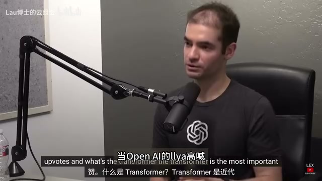
00:00:00–00:00:04 · 画面 001当 OpenAI 的 Lydia 高喊 Transformer 是 AI 的未来，当 Sora 用千亿参数卷动全球时，中国的科学家却翻开历史课本，挖出图灵奖得主勒昆 1998 年的古董卷积神经网络，这项来自北大华为团队的前沿学术成果 DIC，大胆抛弃了复杂的自注意力机制，回归到最基础最经典的三层三卷积。
00:00:04–00:00:08 · 画面 002
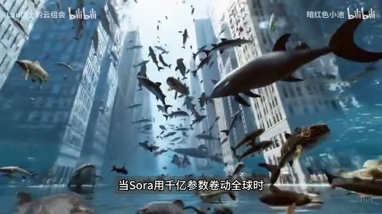
00:00:04–00:00:08 · 画面 00200:00:08–00:00:09 · 画面 003
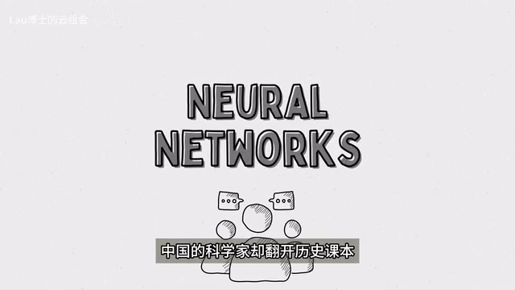
00:00:08–00:00:09 · 画面 00300:00:09–00:00:10 · 画面 004
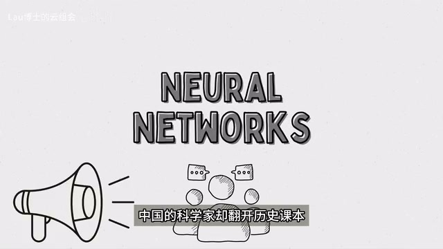
00:00:09–00:00:10 · 画面 00400:00:10–00:00:14 · 画面 005
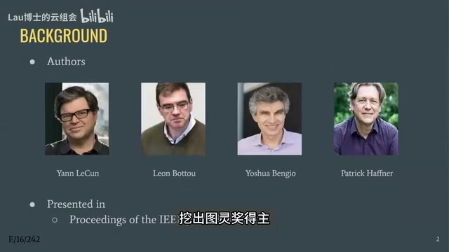
00:00:10–00:00:14 · 画面 00500:00:14–00:00:18 · 画面 006
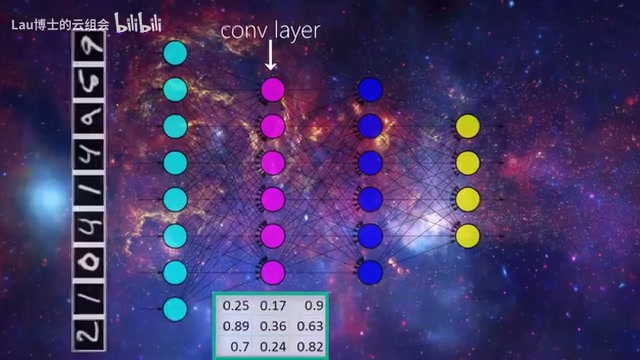
00:00:14–00:00:18 · 画面 00600:00:18–00:00:22 · 画面 007
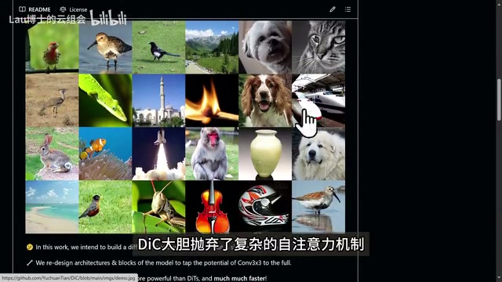
00:00:18–00:00:22 · 画面 00700:00:22–00:00:26 · 画面 008
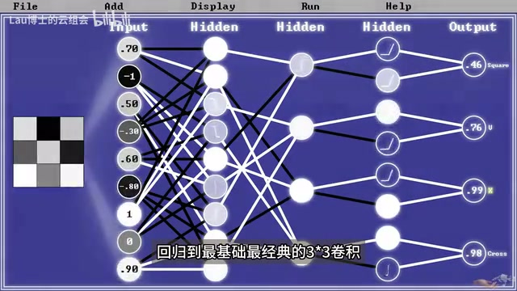
00:00:22–00:00:26 · 画面 008让卷积神经网络重夺扩散模型架构王座，性能碾压 DIT，计算复杂度大幅降低，推理速度狂飙 500%本期硬核揭秘这篇 CVPR2025 的最新文章，看 DiffusionCNN 如何重塑视频生成规则。欢迎来到力武博士的云主会，我们每周都将至少有一篇高质量的论文精读发布出来，相信在一系列的论文学习以后你。
00:00:26–00:00:28 · 画面 009
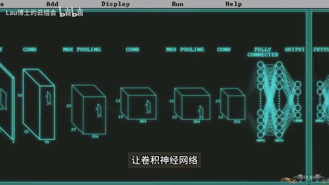
00:00:26–00:00:28 · 画面 00900:00:28–00:00:32 · 画面 010
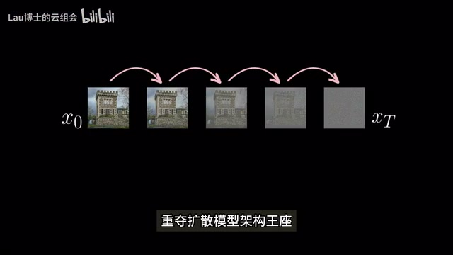
00:00:28–00:00:32 · 画面 01000:00:32–00:00:36 · 画面 011
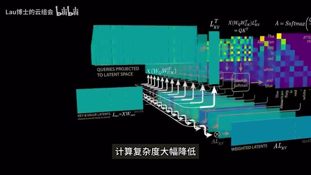
00:00:32–00:00:36 · 画面 01100:00:36–00:00:43 · 画面 012
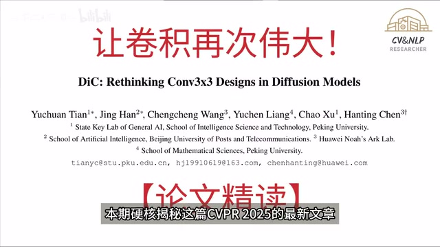
00:00:36–00:00:43 · 画面 01200:00:43–00:00:44 · 画面 013
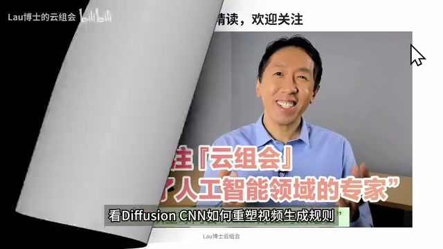
00:00:43–00:00:44 · 画面 01300:00:44–00:00:52 · 画面 014
00:00:44–00:00:52 · 画面 01400:00:52–00:00:53 · 画面 015
00:00:52–00:00:53 · 画面 015就能成为人工智能领域的专家，大家好，今天我们聚焦一篇颠覆扩散模型设计的前约论文 DIC，它用最基础的三层三卷机挑战了当前主流的 Transformer 的架构霸权，在生成质量和速度上实现了双重突破，接下来我们将一步步拆解 DIC
00:00:53–00:00:57 · 画面 016
00:00:53–00:00:57 · 画面 01600:00:57–00:01:01 · 画面 017
00:00:57–00:01:01 · 画面 01700:01:01–00:01:04 · 画面 018
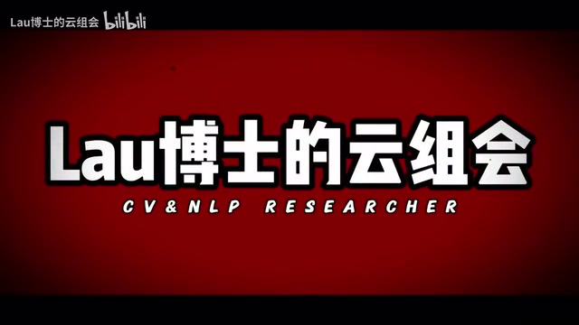
00:01:01–00:01:04 · 画面 01800:01:04–00:01:18 · 画面 019
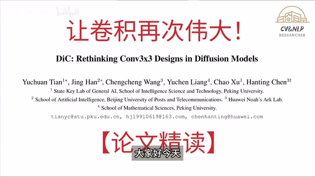
00:01:04–00:01:18 · 画面 01900:01:18–00:01:19 · 画面 020
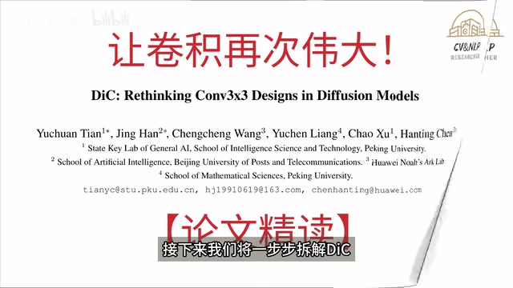
00:01:18–00:01:19 · 画面 020马上就要进入正文的讲解了，我们会先回顾与 DIC 相关的经典工作 RepVGG，接着来看作者是如何在当下的 Transformer 流行的环境里面提出这个方法，接着我们会深入的了解 DIC 的模型的设计思路以及实验结果，为什么要先提 RepVGG 呢，因为它为 DIC 提供了关键的技术灵感，3x3 的卷积
00:01:19–00:01:35 · 画面 021
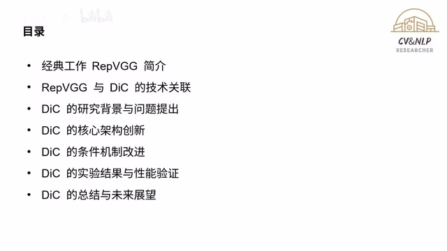
00:01:19–00:01:35 · 画面 02100:01:35–00:01:53 · 画面 022
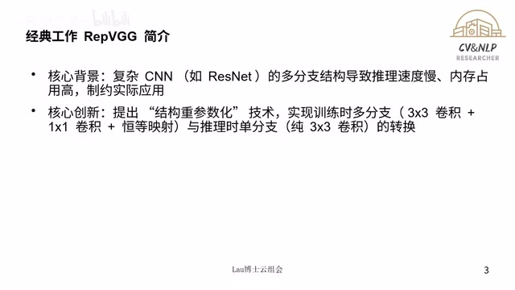
00:01:35–00:01:53 · 画面 022这种算子虽然简单，但经过了巧妙的设计才能够有非常好的效果，在 RepVGG 出现之前，学术界普遍认为模型应该要复杂，比如像 ResNet 的残差连接
00:01:53–00:01:54 · 画面 023
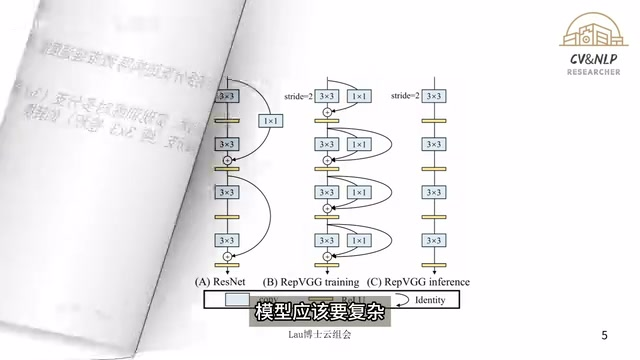
00:01:53–00:01:54 · 画面 02300:01:54–00:02:06 · 画面 024
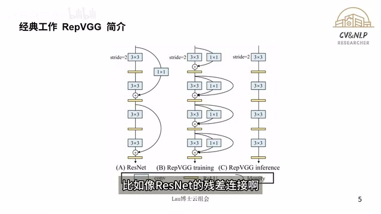
00:01:54–00:02:06 · 画面 024才能够得到很高的性能，这些复杂的结构就像多叉的路口，数据流通的效率非常低，RepVGG 解决的思路非常聪明，训练的时候用多叉路来保证学习能力，就像多车道同时通车，推理的时候通过参数融合把多叉路合并成单车道，让数据跑得更快，实验显示它在 ImageNet 上面的准确率超过了 80%
00:02:06–00:02:14 · 画面 025
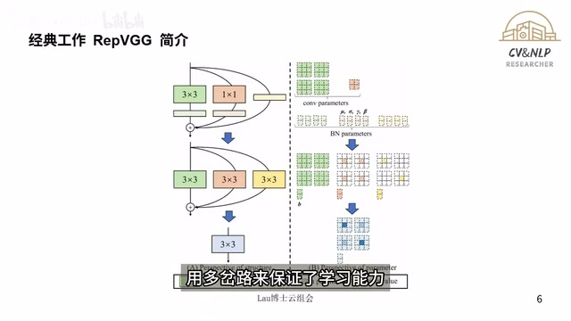
00:02:06–00:02:14 · 画面 02500:02:14–00:02:19 · 画面 026
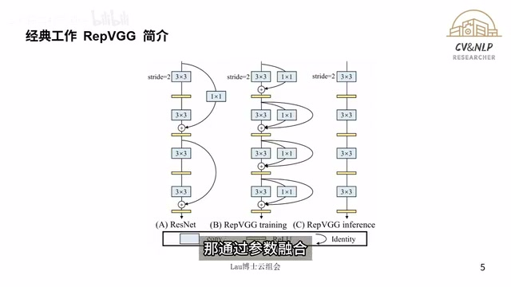
00:02:14–00:02:19 · 画面 02600:02:19–00:02:25 · 画面 027
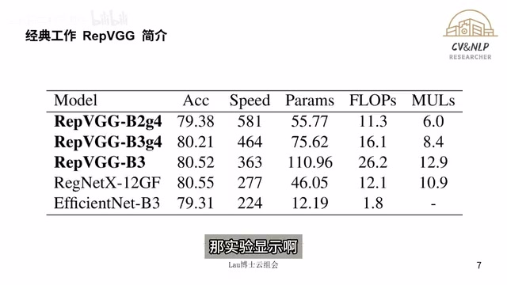
00:02:19–00:02:25 · 画面 027ResNet50 快了 35%内存占用还少了一半这个成果也是给 DIC 有一个重要的启发如果 3x3 的卷积能够在分类的任务里面打败复杂的模型在扩散的生成任务里面是不是也能替代计算量很大的 Transformer?带着这个问题 DIC 的创新之路就开始了
00:02:25–00:02:28 · 画面 028
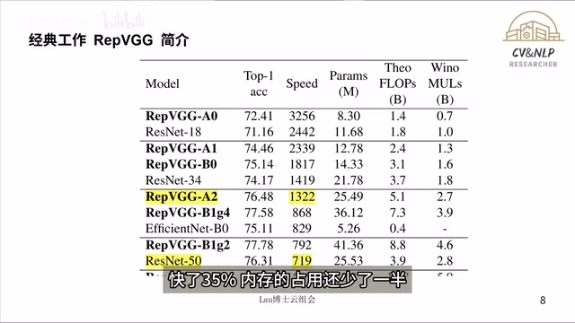
00:02:25–00:02:28 · 画面 02800:02:28–00:02:30 · 画面 029
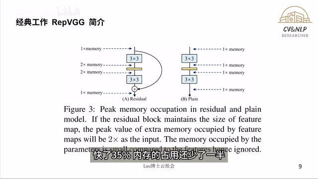
00:02:28–00:02:30 · 画面 02900:02:30–00:02:45 · 画面 030
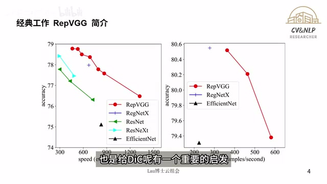
00:02:30–00:02:45 · 画面 03000:02:45–00:02:46 · 画面 031
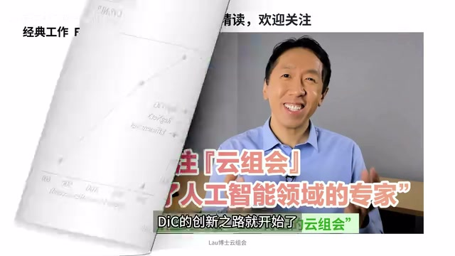
00:02:45–00:02:46 · 画面 031说到这里，再给不熟悉我们的同学介绍一下本频道六博士云组会的自律，打造一站式人工智能交流平台，用尽可能好理解的语言让每位同学都能了解 AI 最前沿的内容。除了视频以外，也欢迎大家加入云组会的知识星球，我们做了三件事：第一，系统性的拆解了热门领域的学习路线，帮你的避开无效的努力；第二，每日更新精选文献解读。
00:02:46–00:02:55 · 画面 032
00:02:46–00:02:55 · 画面 03200:02:55–00:02:56 · 画面 033
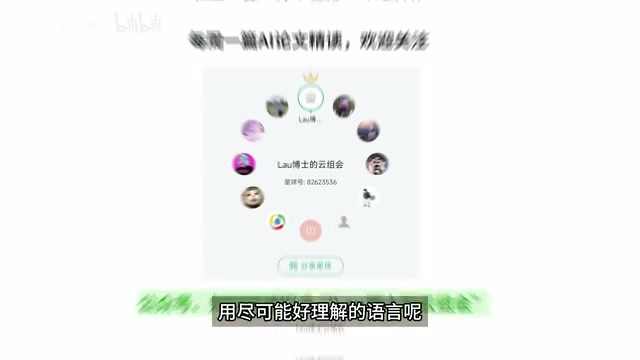
00:02:55–00:02:56 · 画面 03300:02:56–00:03:05 · 画面 034
00:02:56–00:03:05 · 画面 03400:03:05–00:03:06 · 画面 035
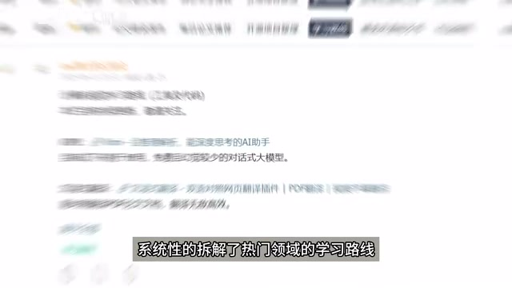
00:03:05–00:03:06 · 画面 03500:03:06–00:03:10 · 画面 036
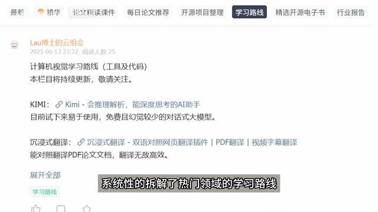
00:03:06–00:03:10 · 画面 03600:03:10–00:03:13 · 画面 037
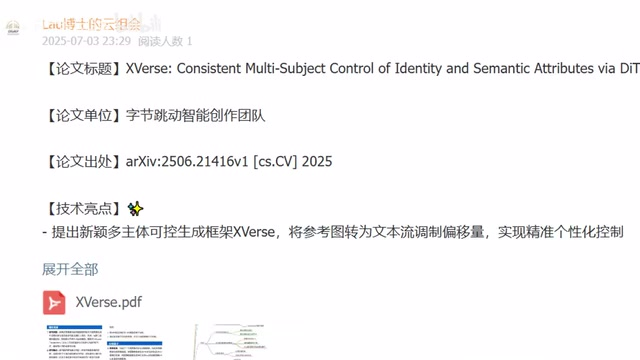
00:03:10–00:03:13 · 画面 03700:03:13–00:03:17 · 画面 038
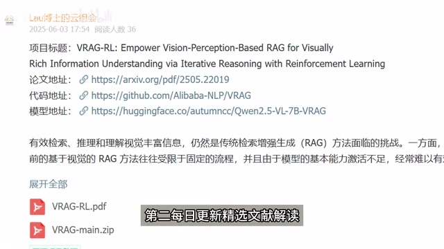
00:03:13–00:03:17 · 画面 038省去 80%的检索时间，3.建立专家学者交流群，不定期掉落福利，直接与专家学者互动交流，深度参与选题云组会，欢迎各位同学的加入，RepVGG 的成功为 DIC 铺平了道路，最直接的联系就是 3x3 卷积了，成了它们的共同选择，这种算子之所以被青睐，是因为它能被 Winograd 的算法大幅加速，DIC 直接沿用了这一思路
00:03:17–00:03:21 · 画面 039
00:03:17–00:03:21 · 画面 03900:03:21–00:03:23 · 画面 040
00:03:21–00:03:23 · 画面 04000:03:23–00:03:24 · 画面 041
00:03:23–00:03:24 · 画面 04100:03:24–00:03:27 · 画面 042
00:03:24–00:03:27 · 画面 04200:03:27–00:03:44 · 画面 043
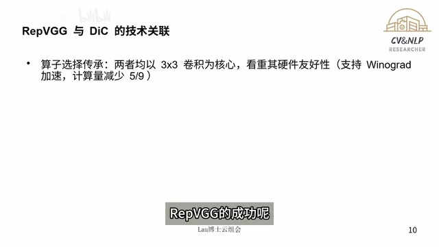
00:03:27–00:03:44 · 画面 043更深层的关联是减法哲学，DIC 通过稀疏跳跃连接减少了信息传递的无效路径，DIC 有很大的贡献，其中之一就是打破了 Transformer 在学术界长期的垄断地位，当扩散模型的领域都在追捧 Transformer 的时候，不少人认为自注意力可能是深层高质量图像的唯一选择，DIC 的团队选择了 RepVGG 的技术路线，简单的算子只要用对的方法也能有非常好的效果
00:03:44–00:04:01 · 画面 044
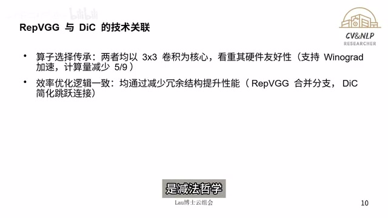
00:03:44–00:04:01 · 画面 04400:04:01–00:04:11 · 画面 045
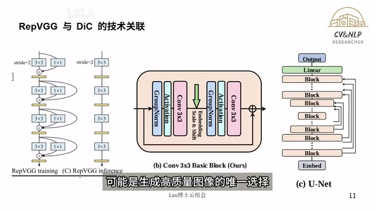
00:04:01–00:04:11 · 画面 04500:04:11–00:04:37 · 画面 046
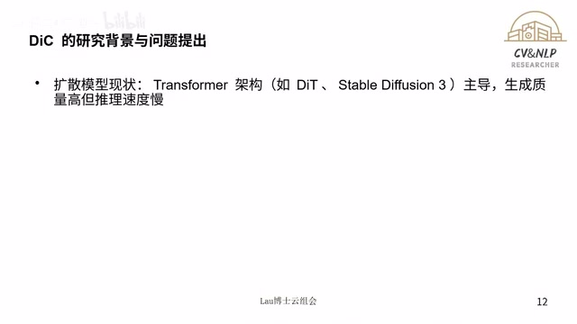
00:04:11–00:04:37 · 画面 046如果你用过 Stable Diffusion 生成图像，可能会发现这样子的一个现象，图像的尺寸越大，等待的时间越长。比如像生成 512x512 的图可能要半分钟，256x256 的图可能只要几秒钟，这不是你的电脑不行，而是模型天生有缺陷。当前主流的扩散模型都是用缺缩它的自注意力机制的计算量会随着图像的尺寸成平凡增长，这种二次复杂度。
00:04:37–00:04:47 · 画面 047
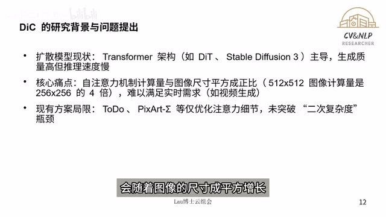
00:04:37–00:04:47 · 画面 047让 Transformer 在高清图像视频生成等场景有点力不从心，那卷积这边就好很多了。3x3 的卷积的计算量和图像尺寸是线性关系，如果能用它来替代自注意力，速度的问题不就解决了吗？但事情并没有那么简单。DIC 初期的实验显示，直接把 Transformer 换成 3x3 的卷积以后，生成的图像 FID 从 12.96 飙升到了 29.3 亿，这就像用显微镜看风景。
00:04:47–00:04:58 · 画面 048
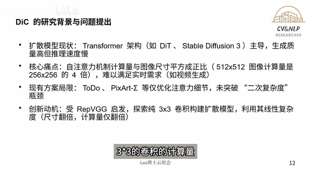
00:04:47–00:04:58 · 画面 04800:04:58–00:05:21 · 画面 049
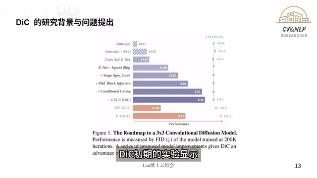
00:04:58–00:05:21 · 画面 049只能看到局部的细节，看不到全局，这是因为 3x3 的卷积感受野太小了，那怎么让 3x3 的卷积看到更大的范围呢，DIC 的创新就从这里开始了，DIC 的第一个神操作是换架构，它没有沿用 DIT 的各向同性结构，从头到尾保持同一个尺寸，而选择了 U-Net 的沙漏结构，这个选择非常关键，unet 的编码器会不断的缩小图像，这就像我们看地图的时候先缩小
00:05:21–00:05:58 · 画面 050
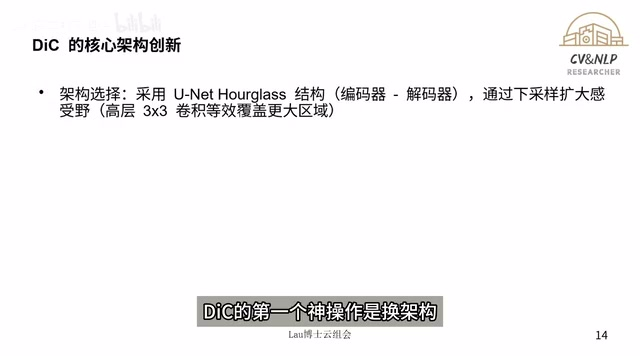
00:05:21–00:05:58 · 画面 050再看全局然后再放大看细节比如经过 4 次的下采样以后特征图的尺寸变成原来的 1⁶这使得一个 3×3 的卷积就能看到原始图像 48×48 的区域这就完美解决了 3×3 卷积感受野小的问题实验显示单换 U-Net 就把 FID 从 29.31 降到了 14.65
00:05:58–00:06:05 · 画面 051
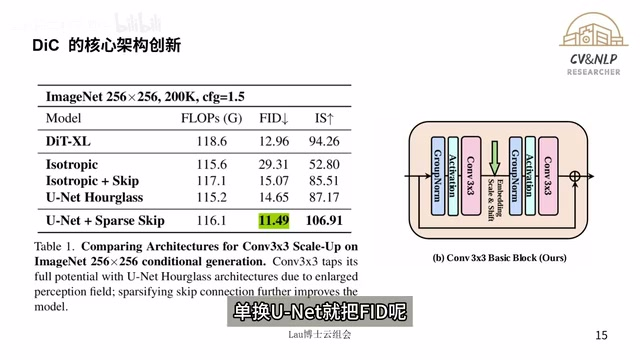
00:05:58–00:06:05 · 画面 051效果立竿见影。但传统的 U-Net 有个毛病，编码器和解码器的每个块都要连接，这就像给每个小区修一条直达四中心的高速，造成了大量的冗余。DiC 提出了稀疏跳跃连接，每隔两到三个块才连一次，只传递最核心的信息。这一步让 FID 再降到 11.49，计算量也大幅的减少。
00:06:05–00:06:22 · 画面 052
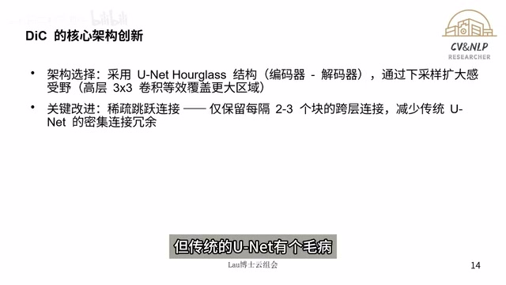
00:06:05–00:06:22 · 画面 05200:06:22–00:06:29 · 画面 053
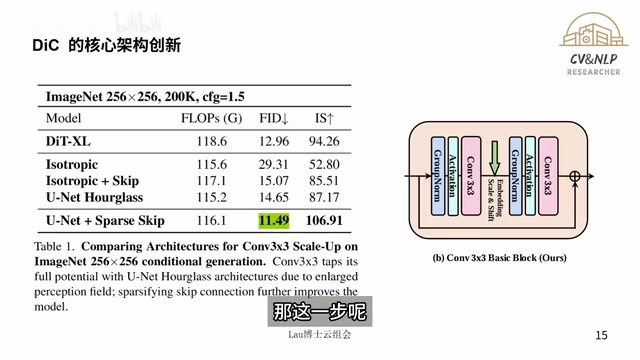
00:06:22–00:06:29 · 画面 053基础的模块也做了极致的简化，两个 3x3 的卷积加残差连接，没有任何花里不少的结构，这种设计能够让它充分的利用硬件的加速，我们从表上可以看到 DICXL 的计算量经过 Winograd 的优化以后几乎几半，这相当于用一半的燃料就跑出了相同的路程，效率非常的惊人，扩散模型不仅要画得像，还要画得对，比如输入猫的标签生成的应该是猫而不是狗
00:06:29–00:06:39 · 画面 054
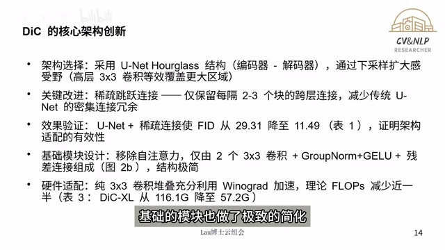
00:06:29–00:06:39 · 画面 05400:06:39–00:06:50 · 画面 055
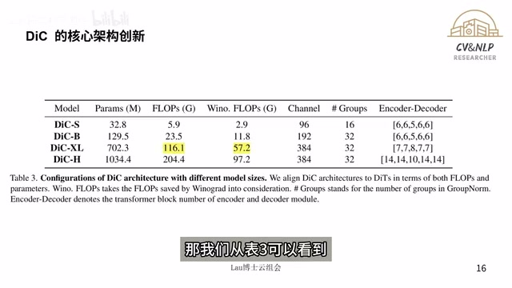
00:06:39–00:06:50 · 画面 05500:06:50–00:07:30 · 画面 056
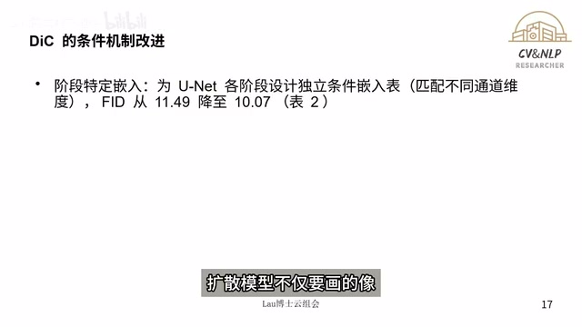
00:06:50–00:07:30 · 画面 056只需要条件信息和图像特征的精确匹配，DIC 在这方面的改进堪称教科书级别，第一个阶段是阶段特定的嵌入，想象给不同身高的人穿同一件衣服肯定是不合适的，U-Net 各个阶段的特征通道数差异是很大的从 96 到 384 这就像是不同身高的人 DIC 给每个特定的阶段都定制了衣服让条件信息和特征维度完美的匹配从表 2 可以看到这一步让 FID 从 11.49 降到了 10.07 而且成本极低只增加了 2%的参数计算量几乎不变第二项是中间块条件注入
00:07:30–00:07:36 · 画面 057
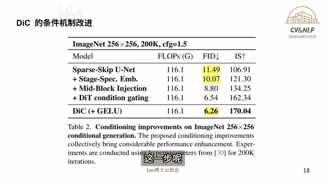
00:07:30–00:07:36 · 画面 05700:07:36–00:07:58 · 画面 058
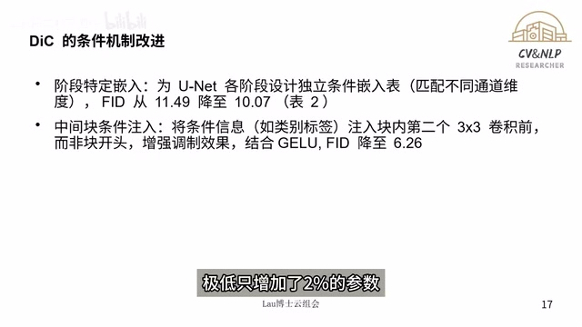
00:07:36–00:07:58 · 画面 058传统的模型在快开头注入了条件，这就像做饭一开始把所有的调料都倒进去。DIC 则在第二个卷积前注入，就像快出锅时调味，能够更精准的调整味道。这一步让 FID 再降了 4.23 到 6.26。第三项是条件门控，给特征通道加了音量调节器，根据条件的动态调整了每个通道的权重。
00:07:58–00:08:05 · 画面 059
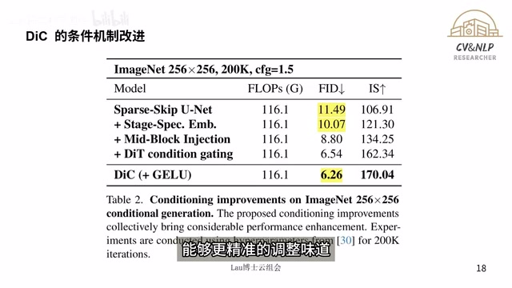
00:07:58–00:08:05 · 画面 05900:08:05–00:08:25 · 画面 060
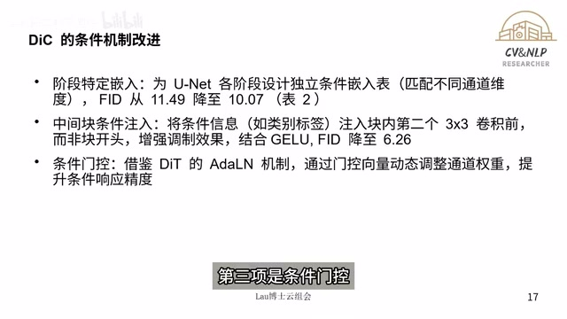
00:08:05–00:08:25 · 画面 060比如生成黑猫的时候，增强了黑色相关的通道的权重；生成白猫的时候，就减弱这些通道，让条件控制更加的精细。最后，DIC 把激活函数从 0 换成了 0，就像把灶台的火力调到最佳
00:08:25–00:08:46 · 画面 061
00:08:25–00:08:46 · 画面 061在所有的模型的尺寸上都带来了稳定的提升。这些改进看似零碎，却像精密的齿轮一样协同工作，那样三层三的卷积终于是听懂了条件进行的指令。实验数据是最有力的说明
00:08:46–00:08:47 · 画面 062
00:08:46–00:08:47 · 画面 06200:08:47–00:09:15 · 画面 063
00:08:47–00:09:15 · 画面 063DIC 的表现完全可以用利息来形容先看和 DIT 的正面 PK 在 256x256 的图像生成当中 DICXL 的 FID 比 DITXL-2 低了 35%FID 越低说明图像越真实同时图像的多样性指标 IS 从 66.74 标升到了 100.15 证明了它的图像生成是多样性的不会翻来覆去只有几种模板
00:09:15–00:09:41 · 画面 064
00:09:15–00:09:41 · 画面 064再看速度 DIC XL 每秒能够生成 313.7 张图那是 DIC XL-2 的 4.7 倍那换算纯实际的体验的话如果用 DIC 生成一张图要等 1.2 秒那用 DIC 呢只要 0.26 秒那接近于 40 那这对于直播滤镜游戏场景等生成的环境呢需要更快的响应速度的应用来讲简直是降维打击在 512x512 大尺寸的图像上 DIC 的优势更为明显 DIC 的 FID 是 20.94DIC XL 是 15.32 而且 DIC 的速度是 DIC 的 5 倍之多这正是 3x3 卷积的线性复杂度的威力尺寸越大 DIC 的优势越突出最让人惊喜的是训练效率 DIC-H 的训练 800 步就达到了 DIC XL-2 训练 7M 步的效果
00:09:41–00:10:19 · 画面 065
00:09:41–00:10:19 · 画面 065对于研究者来说这意味着可以用更少的资源快速的迭代模型对企业来说则能够大幅的降低大模型的部署成本当开启了 Classifier-Free Guidance 以后 DIC 的表现就更为的惊艳了表谱就显示它的 FID 降到了 3.89 比 DIT 低了 38%这就意味着深层的图像几乎可以以假乱真
00:10:19–00:10:20 · 画面 066
00:10:19–00:10:20 · 画面 06600:10:20–00:10:25 · 画面 067
00:10:20–00:10:25 · 画面 06700:10:25–00:11:00 · 画面 068
00:10:25–00:11:00 · 画面 068把模型进一步放大到 DIC-H 我们来看到表 9 在 2M 步的训练以后 FID 达到了 2.25 超过了 DIT-XL-2 和 UVIT-H 而且吞吐量几乎是前两者的 3 倍这就意味着 DIC 是具备成为主流扩散模型的潜力更厉害的是 DIC 还能跟其他的技术强强联合比如像 REPA
00:11:00–00:11:18 · 画面 069
00:11:00–00:11:18 · 画面 069跟它结合以后，DIC XL 在 EM 部的训练以后，FID 能低到 1.74。我们来看到表示 3，进一步拉开跟 Transformer 的差距。从可视化的样本来看，DIC 深层的图像的细节也是拉满的。总结一下，DIC 的横空出世给扩散模型领域带来了一场效率革命，它用最基础的三层三卷机通过架构适配和条件机制的改进。
00:11:18–00:11:23 · 画面 070
00:11:18–00:11:23 · 画面 07000:11:23–00:11:47 · 画面 071
00:11:23–00:11:47 · 画面 071不仅在生成质量上练压了 Transformer，还把速度提升了 4-5 倍，Sora 那样的视频生成技术不再是高端服务器的专属，DIC 的成功本质上是 RepVGG 简单哲学的延续，模型的强大不在于结构多复杂，而是在于能否把基础的算子的潜力发挥到极致，对于行业来说，DIC 的意义在于降低了 AI 生成的门槛
00:11:47–00:11:56 · 画面 072
00:11:47–00:11:56 · 画面 07200:11:56–00:12:32 · 画面 073
00:11:56–00:12:32 · 画面 073以前需要高端的 GPU 才能运行的模型，现在普通的设备也有机会胜任了。这将会加速 AI 绘画、虚拟场景创建等工具的普及。对于研究者来说，他就提醒我们，与其盲目的跟风设计复杂的模型，不如来研究基础算子的特性来结合具体的任务作用。这种从简出发的思路往往能带来意想不到的突破。以上是本期视频的全部内容，欢迎关注六博士的云组会，成为人工智能领域的专家
00:12:32–00:12:36 · 画面 074
00:12:32–00:12:36 · 画面 07400:12:36–00:12:37 · 画面 075
00:12:36–00:12:37 · 画面 07500:12:37–00:12:38 · 画面 076
00:12:37–00:12:38 · 画面 076转写与来源说明 · 0 个自动复核提示
保留 30 个原始语音片段，0 个片段触发自动复核提示。提示仅用于定位可能的术语、重复或识别问题，不等于已确认错误。
讲解画面为源视频截图（640×360），不是可编辑 PPT 文件。全片按每秒 2 帧扫描内容变化，逐步展开页保留；连续动画保留代表画面。清晰度受源视频限制。
原视频：paper/合集_2026-10-16_论文精读/DiT被CNN爆杀！提速500%碾压Transformer：DiC【论文精读】.mp4
SHA-256：e42a4db25d3dd44b0624502e21cc07b2336d91ee5783b45640d699f9af163e39
全文按视频语音与画面制作。原论文可从上方链接下载；完整资料包保留全文、原始逐字稿、字幕和校对记录。